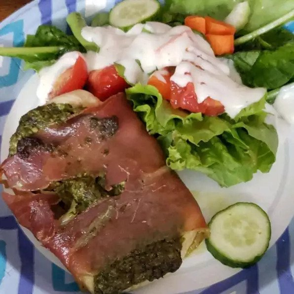

Pesto Chicken

Description
A simple way to prepare chicken that looks like you spent a lot of time preparing. It can also be prepared ahead of time and refrigerated until baked. Be sure to use a good quality pesto for best results. I like to serve it with pasta, but it is also nice sliced and served on a green salad.
Ingredients
- 4 skinless, boneless chicken breast halves
- ½ cup prepared basil pesto, divided
- 4 thin slices prosciutto, or more if needed
Steps
- Preheat oven to 400 degrees F (200 degrees C). Grease a baking dish.
- Spread about 2 tablespoons of pesto per chicken breast over the top of each breast, and wrap each breast in prosciutto slices to cover the entire breast. Place the wrapped chicken breasts into the prepared baking dish.
- Bake in the preheated oven until the chicken is no longer pink, the juices run clear, and the prosciutto is lightly crisped, about 25 minutes.